20個素材島圖鑑
感謝Ninji的資料網站
島嶼列表
| 普通島1號 | 普通島2號 | 螺旋島 | 指尖陀螺島 |
| 山島 | 金銀島1號 | 金銀島2號 | 竹島 |
| 水果島 | 花島 | 狼蛛島 | 水生昆蟲島 |
| 樹島1號 | 樹島2號 | 大型魚島1號 | 大型魚島2號 |
| 垃圾島 | 鯊魚島 | 瀑布島 | 金礦石島 |
- 圖例
- 半橢圓:樹
- 紅點:花
- 灰色半橢圓:石頭
普通島1號
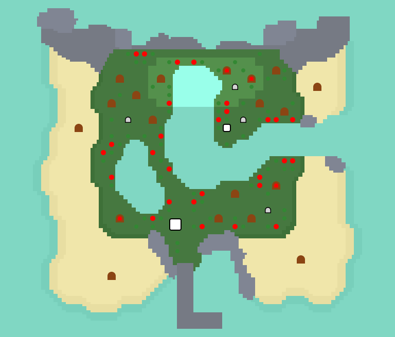一個相當普通的島,9%機率出現，第一次出島必抵達，
有懸崖、你島上特產的水果、椰子、河流和池塘
普通島2號
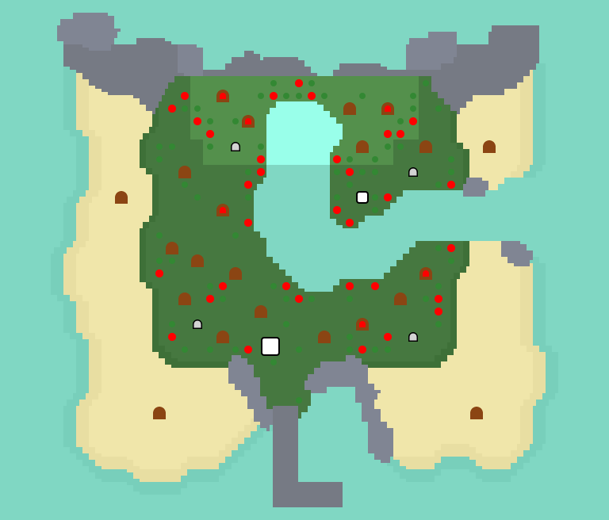9%機率出現，跟第一個島幾乎一樣，除了懸崖比較大，而且沒有池塘
螺旋島
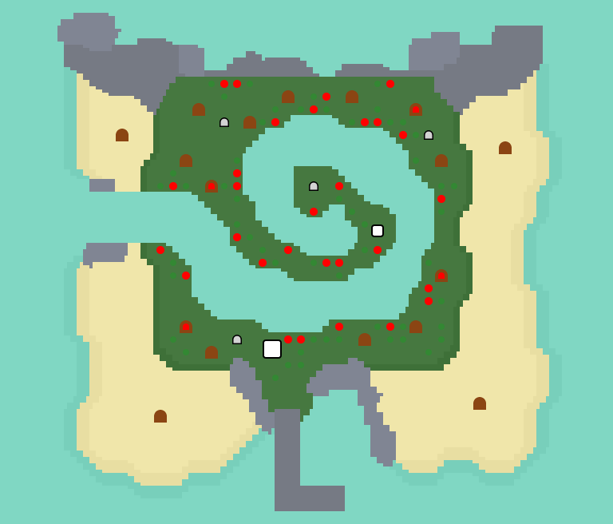9%機率出現，島嶼形狀有些特別，但基本上能獲得的資源與前兩個島一樣
指尖陀螺島
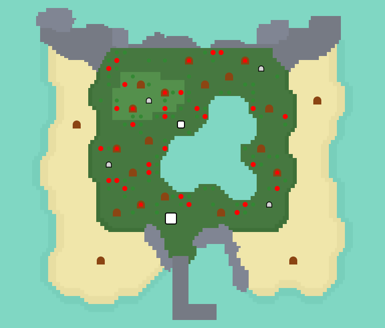9%機率出現，池塘圖案像指尖陀螺而得名， 沒有河流，只有池塘和大海
山島
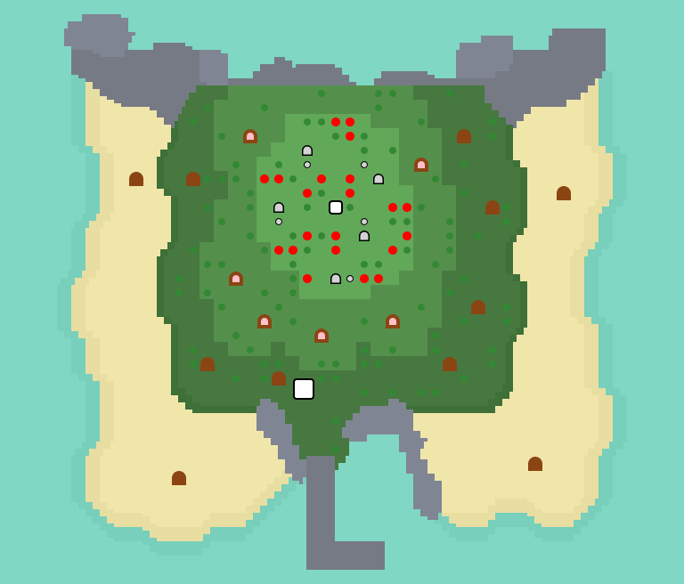9%機率出現，有3層，沒有河流，最底層有規則的樹木，
第二層有你島上特產的水果，而頂層有五塊岩石
需要帶梯子
金銀島1號
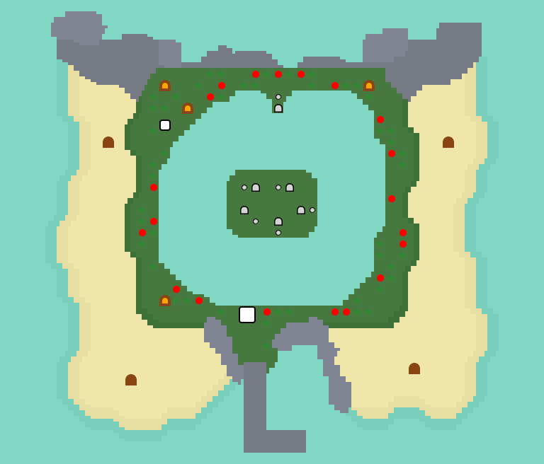5%機率出現，可打破北端的岩石，再撐桿跳到中間的小島，中間小島的岩石只產金錢
需要帶撐竿跳竿子
金銀島2號
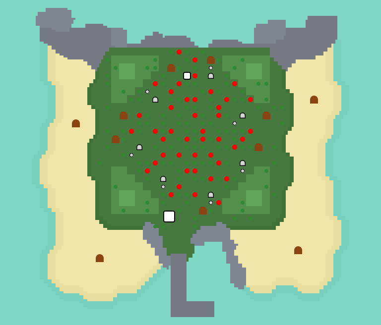2%機率出現，在四個角落各有一座三角形的小山，島上的7塊岩石只會產金錢
一天只能造訪一次
竹島

10%機率出現，這個島上的每一棵樹都是竹子，一年四季都可以上
水果島
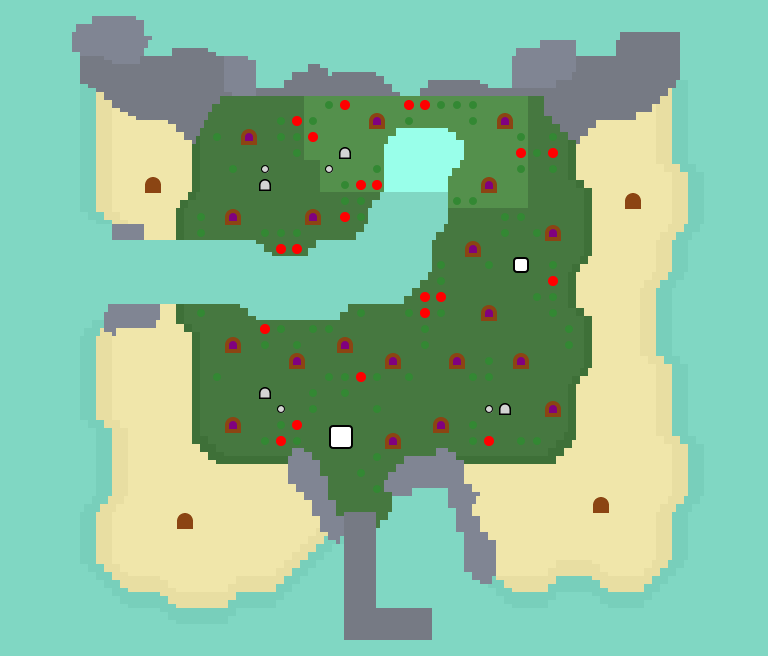9%機率出現，這個島上共有19棵果樹，但整個島只有一種水果，種類會和你島上的特產水果不同
花島
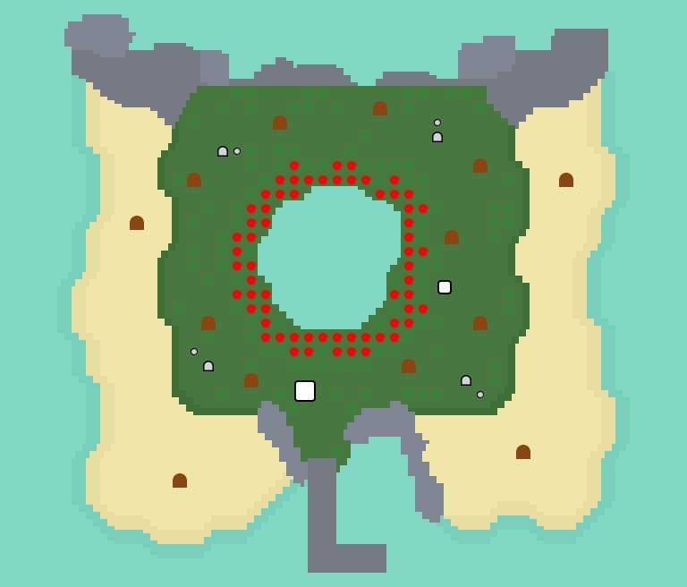2%機率出現，這個島上有一個被稀有花朵包圍的池塘，會生成與花有關的昆蟲
一天只能造訪一次
狼蛛島
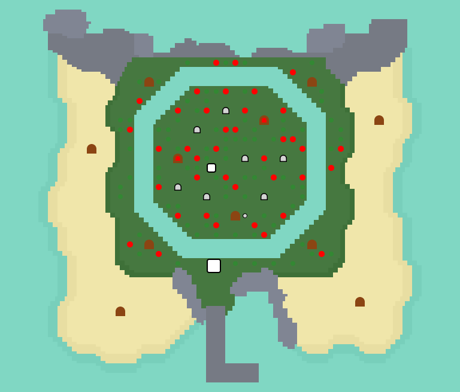2%機率出現，島上有大量狼蛛，島上的河不用桿子也可跳過
一天只能造訪一次
水生昆蟲島
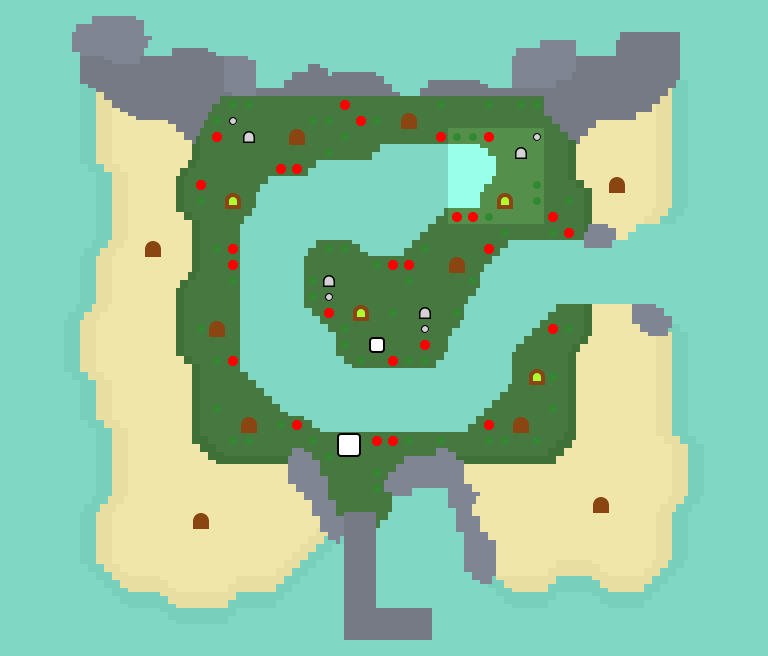5%機率出現，東北有一個方形懸崖，只會出現水生昆蟲，如蜻蜓、水黽、龍蝨、田鱉
樹島1號
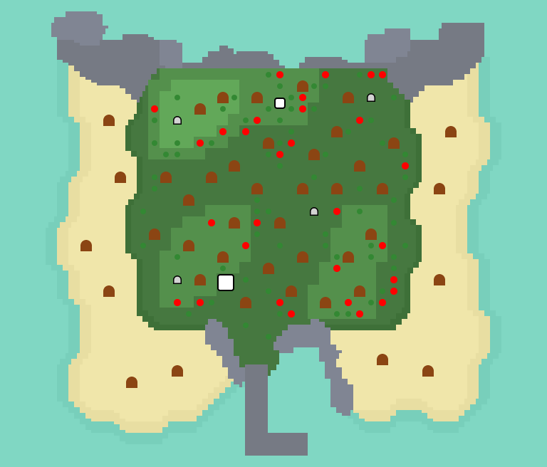2%機率出現，島上沒有河流或池塘，有大量的樹木，會生成和樹木有關的昆蟲
一天只能造訪一次，需要帶梯子
樹島2號
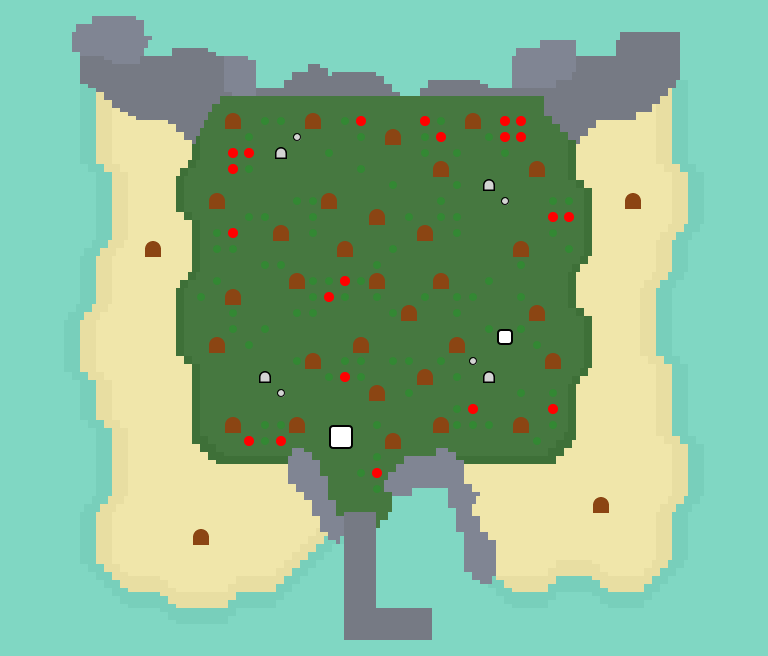1%機率出現，這個島的外觀和竹島一模一樣，但是島上的樹只產硬木材
一天只能造訪一次
大型魚島1號
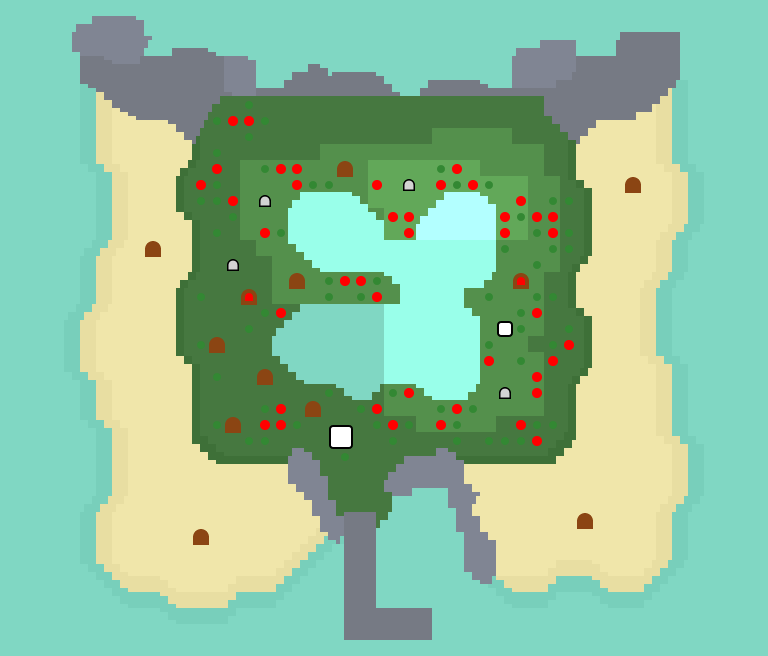3%機率出現，島上的池塘只有大型魚，另外島上還有稀有花
一天只能造訪一次，需要帶梯子
大型魚島2號
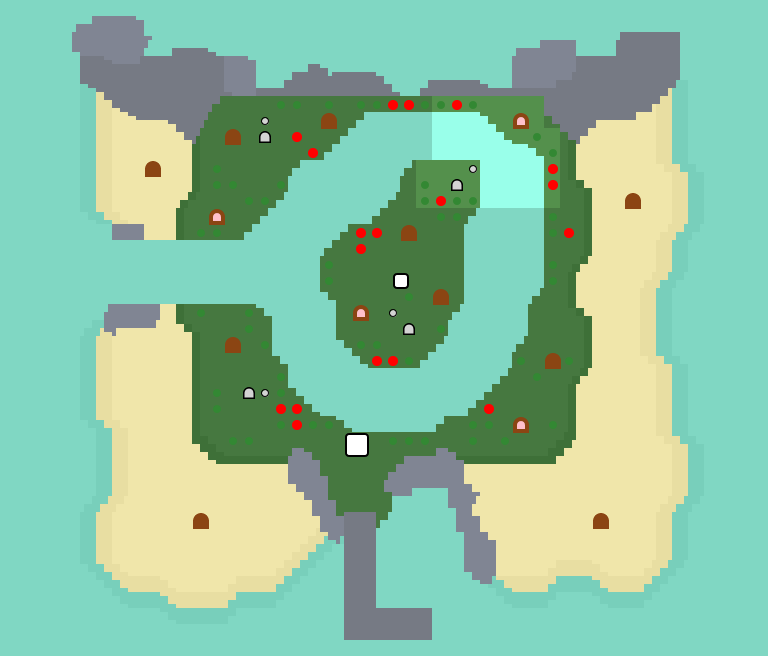2%機率出現，島上的池塘一樣只有大型魚，但是島上稀有花數量比大型魚島1號還少
一天只能造訪一次，需要帶撐竿跳竿子
垃圾島
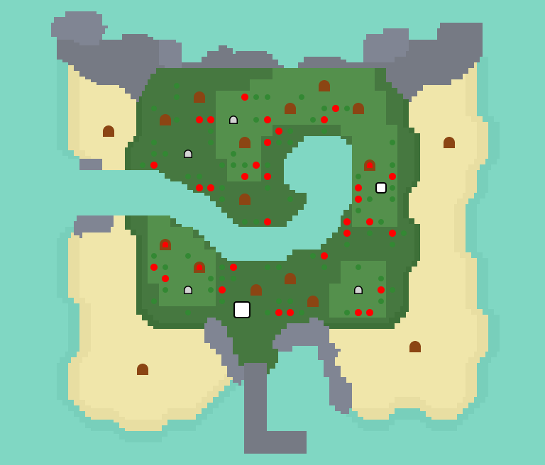5%機率出現，島上所有可釣到的魚都是垃圾，只會出現水生昆蟲，如蜻蜓、水黽、龍蝨、田鱉
鯊魚島
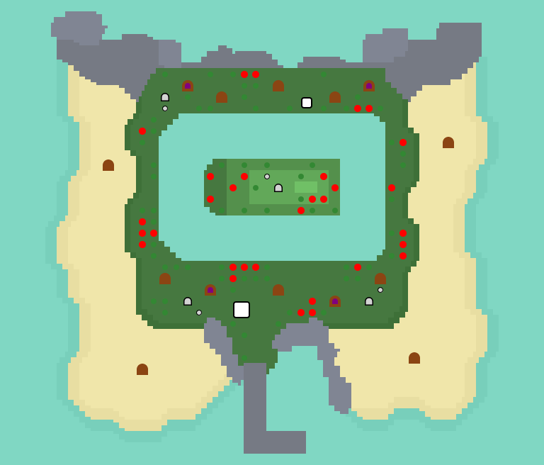1%機率出現，島中央有一個長方形懸崖，
但是太高了無法爬上去，島上所產的魚全都是有背鰭的魚，如鯊魚類的
一天只能造訪一次，需要帶梯子，撐竿跳竿子
瀑布島
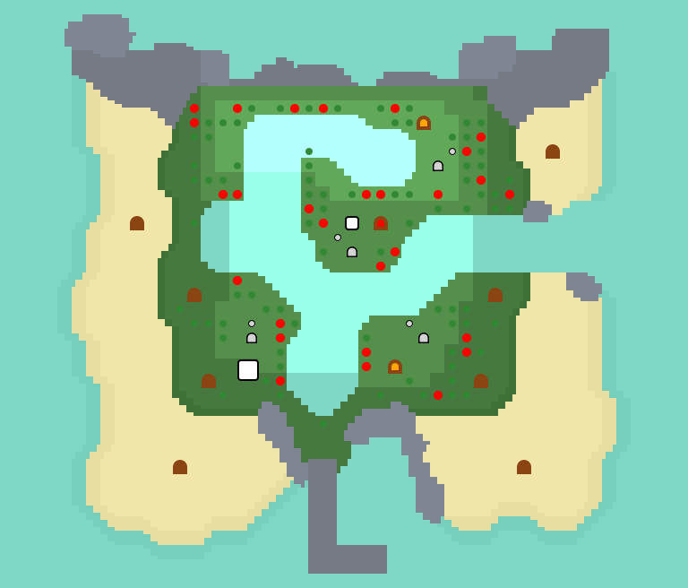5%機率出現，有許多懸崖、瀑布，資源普通
需要帶梯子
金礦石島
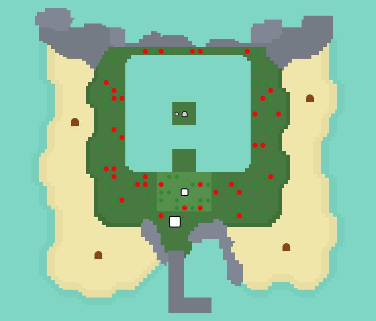1%機率出現，非常稀有，島中央的岩石只產金礦石，另外島上昆蟲只有蠍子
一天只能造訪一次，需要帶梯子，撐竿跳竿子